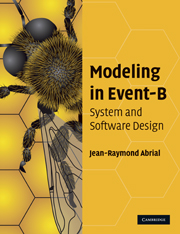
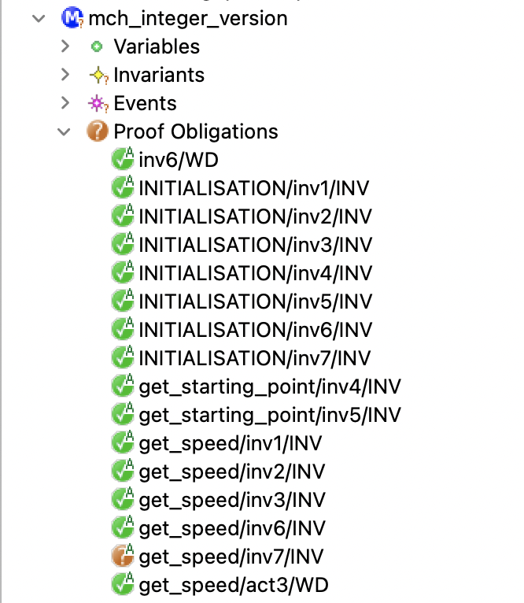
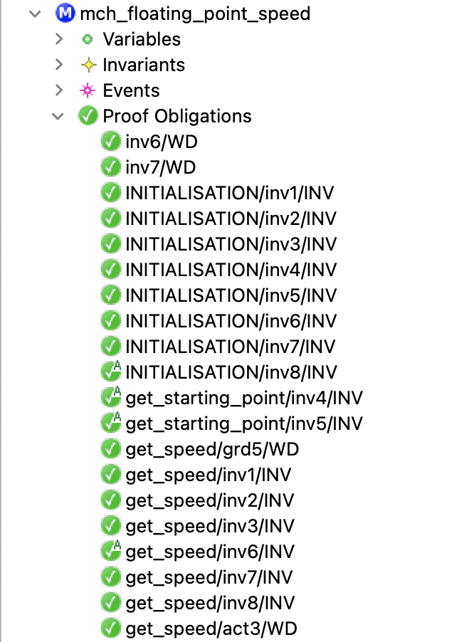

The LMF Lab Seminar
Domaine Saint Paul, Saint-Rémy-lès-Chevreuse - June 13-14, 2024
Domaine Saint Paul, Saint-Rémy-lès-Chevreuse - June 13-14, 2024

The Event-B method
- The Event-B method is an evolution of the classical
B method.
- modeling a system by a set of events instead of operations.
- The Event-B method is a formal method based on
first-order logic and set theory. - The Event-B method is based on :
- the notions of pre-conditions and post-conditions (Hoare),
- the weakest pre-condition (Dijkstra),
- and the calculus of substitution (Abrial).
Using Event-B method
- The Rodin platform (an Eclipse-based IDE) is intended to support the construction and verification of Event-B models.
- The use of the Event-B method has continued to increase.
- applied to various applications and domains.
- railway, automotive, aeronautics, cybersecurity, nuclear-energy, ...
- The Event-B method is adapted to analyse discrete systems.
- offers the possibility of modelling discrete behaviors.
The Event-B method
CONTEXT $ctx_1$ EXTENDS $ctx_2$
SETS $s$ CONSTANTS $c$ AXIOMS $A(s,c)$ THEOREMS $T(s,c)$
END
MACHINE $mch_1$ REFINES $mch_2$ SEES $ctx_i$
VARIABLES $v$ INVARIANTS $I(s,c,v)$ THEOREMS $T(s,c,v)$ EVENTS $[events\_list]$
END
$event$ $\mathrel{\widehat=}$
any $x$
where
$G(s,c,v,x)$
then
$BA(s,c,v,x,v')$
end
- $A(s,c) ~~~\vdash~~~ T(s,c) $
- $A(s,c) \land I(s,c,v) ~~~\vdash~~~ T(s,c,v)$
- $A(s,c) \land I(s,c,v) \land G(s,c,v,x) ~~~\vdash~~~ \exists v'.BA(s,c,v,x,v')$
- $A(s,c) \land I(s,c,v) \land G(s,c,v,x) \land BA(s,c,v,x,v') ~~~\vdash~~~ I(s,c,v')$
- $...$
The theory plugin
- Theory Plug-in provides capabilities to extend the Event-B mathematical language and the Rodin proving infrastructure.
- An Event-B theory can contain :
- new datatype definitions,
- new polymorphic operator definitions,
- axiomatic definitions,
- theorems,
- associated rewrite and inference rules.
-
Michael J. Butler and Issam Maamria.
Practical theory extension in Event-B. Theories of Programming and Formal Methods. 2013. -
Thai Son Hoang, Laurent Voisin, Asieh Salehi, Michael J. Butler, Toby Wilkinson, and Nicolas Beauger.
Theory plug-in for Rodin 3.x. CoRR, abs/1701.08625, 2017.
The Event-B method
THEORY $thy_1$
IMPORT $thy_2$
DATATYPES
$DT_1,...,DT_n$
OPERATORS
$OP_{11},...,OP_{1n}$
AXIOMATIC DEFINITIONS
operators
$OP_{21},...,OP_{2n}$
axioms
$A$
THEOREMS
$T$
PROOF RULES
$PR$
END
CONTEXT $ctx_1$ EXTENDS $ctx_2$ SETS $s$ CONSTANTS $c$ AXIOMS $A(s,c)$ THEOREMS $T(s,c)$
END
MACHINE $mch_1$ REFINES $mch_2$ SEES $ctx_i$ VARIABLES $v$ INVARIANTS $I(s,c,v)$ THEOREMS $T(s,c,v)$ EVENTS $[events\_list]$
END
A simple example
- System that continuously calculates a moving object's speed
A simple example
- Analysing two functional properties:
- PROP-1 : the speed of the moving object is equal to the
$distance\_travelled$
divided by the$measured\_time$($v = d/t$). - PROP-2 : when the
$distance\_travelled$is strictly positive, the$speed$
of the moving object must also be strictly positive.- the object moves when its
$speed$is different from zero.
- the object moves when its
- PROP-1 : the speed of the moving object is equal to the
Objectives $\to$ showing some modelling and verification problems :
- analysing physical phenomena.
- expressions that come from the physics laws.
- using integer variables to handle small values.
The Event-B model
- Analysing two functional properties:
- PROP-1 : the speed of the moving object is equal to the
$distance\_travelled$
divided by the$measured\_time$($v = d/t$). - PROP-2 : when the
$distance\_travelled$is strictly positive, the$speed$
of the moving object must also be strictly positive.- the object moves when its
$speed$is different from zero.
- the object moves when its
- PROP-1 : the speed of the moving object is equal to the
MACHINE mch_integer_version ... INVARIANTS @inv1: distance_travelled $\in$ $\mathbb N$ @inv2: measured_time $\in$ $\mathbb N_1$ @inv3: speed $\in$ $\mathbb N$ @inv4: starting_position $\in$ $\mathbb N$ @inv5: starting_time $\in$ $\mathbb N$
@inv6: speed $=$ distance_travelled $\div$ measured_time // PROP-1 @inv7: distance_travelled $>$ $0$ $\mathbin\Rightarrow$ speed $>$ $0$ // PROP-2
The Event-B model
MACHINE mch_integer_version
...
EVENTS
...
get_starting_point $\mathrel{\widehat=}$
any p t
where
@grd1: p $\in$ $\mathbb N_1$
@grd2: t $\in$ $\mathbb N_1$
then
@act1: starting_position $:=$ p
@act2: starting_time $:=$ t
end
...
END
MACHINE mch_integer_version
...
EVENTS
...
get_speed $\mathrel{\widehat=}$
any p t
where
@grd1: p $\in$ $\mathbb N_1$ $\land$ p $>$ starting_position
@grd2: t $\in$ $\mathbb N_1$ $\land$ t $>$ starting_time
then
@act1: distance_travelled $:=$ p $-$ starting_position
@act2: measured_time $:=$ t $-$ starting_time
@act3: speed $:=$ (p $-$ starting_position) $\div$ (t $-$ starting_time)
end
END
generated and proven POs
- All POs are green except the one for maintaining
the $@inv7$ invariant by the$get\_speed$event. - This invariant formalises the PROP 2 property.
- the object moves (
$distance\_travelled \neq 0$)
when$speed \neq 0$.
- the object moves (
- The
$get\_speed$event calculates the new value
of$distance\_travelled$that can be$\lt$the new value
of$measured\_time$.- the new value of
$speed$
($distance\_travelled \div measured\_time$)
can be$= 0$while$distance\_travelled \neq 0$ -
$\div$makes an integer division
- the new value of
Conclusion
The basic types and operators of the Event-B language
are not adapted to our needs
are not adapted to our needs
floating-point numbers
$$
x = 3.14159265359 =
\underset{\text{significand}}{\underbrace{314159265359}} \times
\underset{\text{base}}{\underbrace{10}}^{\overset{\text{exponent}}{\overbrace{-11}}}
$$
We have chosen that the base always equals ten in our models.
$$
x = s(x) \times 10^{e(x)}
$$
- The proposed theory does not model limited precision.
- The operators defined in the theory involve no precision loss.
The proposed approach
-
To allow the Event-B language to embed this FP representation,
we need to define two theories:- the first theory formalises the power operator.
- ^ operator is not implemented in the provers besides ^0 and ^1.
- the second theory formalises floating-point numbers by specifying:
- the corresponding data type,
- the supported arithmetic operators,
- some axioms and theorems that characterize the proposed modelling.
- the first theory formalises the power operator.
The power operator
THEORY thy_power_operator AXIOMATIC DEFINITIONS operators pow(x $\in$ $\mathbb Z$, n $\in$ $\mathbb N$) : $\mathbb Z$ INFIX // x pow n $=$ $x^n$ wd condition : $\neg$ (x $=$ 0 $\land$ n $=$ 0) // $0^0$ is not defined
axioms @axm1: $\forall$ n $\cdot$ n $\in \mathbb N_1$ $\mathbin\Rightarrow$ 0 pow n $=$ 0 @axm2: $\forall$ x $\cdot$ x $\in \mathbb Z$ $\land$ x $\neq$ 0 $\mathbin\Rightarrow$ x pow 0 $=$ 1 @axm3: $\forall$ x,n $\cdot$ x $\in \mathbb Z$ $\land$ x $\neq$ 0 $\land$ n $\in \mathbb N_1$ $\mathbin\Rightarrow$ x pow n $=$ x $\times$ (x pow (n $-$ 1)) ...
THEOREMS @thm1: $\forall$ x,n,m $\cdot$ $...$ $\mathbin\Rightarrow$ x pow (n $+$ m) $=$ (x pow n) $\times$ (x pow m) @thm2: $\forall$ x,n,m $\cdot$ $...$ $\mathbin\Rightarrow$ (x pow n) pow m $=$ x pow (n $\times$ m) @thm3: $\forall$ x,y,n $\cdot$ $...$ $\mathbin\Rightarrow$ (x $\times$ y) pow n $=$ (x pow n) $\times$ (y pow n) ...
END
Some remarks
- By using this theory, it becomes possible to prove, for example, that
5 pow 3 = 125 - The proofs of all theorems were made by induction
(following the rules defined by Cervelle and Gervais - ABZ 2023). - We have chosen to define the pow operator in a single theory
to offer the possibility of reusing it in other Event-B developments. -
Julien Cervelle and Frédéric Gervais.
Introducing Inductive Construction in B with the Theory Plugin. ABZ, 2023.
The floating-point numbers theory
THEORY thy_floating_point_numbers
DATATYPES
FLOAT_Type $\mathrel{\widehat=}$ NEW_FLOAT(s $\in$ $\mathbb Z$, e $\in$ $\mathbb Z$) // $x = s(x) \times 10^{e(x)}$
OPERATORS
F0 $\mathrel{\widehat=}$ NEW_FLOAT(0,0) // $0 = 0 \times 10^0$
F1 $\mathrel{\widehat=}$ NEW_FLOAT(1,0) // $1 = 1 \times 10^0$
FLOAT1_Type $\mathrel{\widehat=}$ { x $\cdot$ x $\in$ FLOAT_Type $\land$ s(x) $\neq$ 0 | x }
FLOAT(x $\in$ $\mathbb Z$) $\mathrel{\widehat=}$ NEW_FLOAT(x,0) // $x = x \times 10^0$
l_shift(x $\in$ FLOAT_Type, offset $\in$ $\mathbb N$) $\mathrel{\widehat=}$ NEW_FLOAT(s(x) $\times$ (10 pow offset), e(x) $-$ offset)
eq(x $\in$ FLOAT_Type, y $\in$ FLOAT_Type) INFIX $\mathrel{\widehat=}$
s(l_shift(x, e(x) $-$ min({e(x),e(y)}))) $=$ s(l_shift(y, e(y) $-$ min({e(x),e(y)})))
gt(x $\in$ FLOAT_Type, y $\in$ FLOAT_Type) INFIX $\mathrel{\widehat=}$ ...
geq(x $\in$ FLOAT_Type, y $\in$ FLOAT_Type) INFIX $\mathrel{\widehat=}$ ...
lt(x $\in$ FLOAT_Type, y $\in$ FLOAT_Type) INFIX $\mathrel{\widehat=}$ ...
leq(x $\in$ FLOAT_Type, y $\in$ FLOAT_Type) INFIX $\mathrel{\widehat=}$ ...
...
END
The floating-point numbers theory
THEORY thy_floating_point_numbers
...
OPERATORS
...
plus(x $\in$ FLOAT_Type, y $\in$ FLOAT_Type) INFIX $\mathrel{\widehat=}$
NEW_FLOAT(s(l_shift(x,e(x) $-$ min({e(x),e(y)}))) $+$ s(l_shift(y,e(y) $-$ min({e(x),e(y)}))),
min({e(x),e(y)}))
minus(x $\in$ FLOAT_Type, y $\in$ FLOAT_Type) INFIX $\mathrel{\widehat=}$ ...
neg(x $\in$ FLOAT_Type) $\mathrel{\widehat=}$ ...
mult(x $\in$ FLOAT_Type, y $\in$ FLOAT_Type) INFIX $\mathrel{\widehat=}$ NEW_FLOAT(s(x) $\times$ s(y) , e(x) $+$ e(y))
f_pow(x $\in$ FLOAT_Type, n $\in$ $\mathbb N$) INFIX $\mathrel{\widehat=}$ NEW_FLOAT(s(x) pow n, e(x) $\times$ n)
floor(x $\in$ FLOAT_Type) $\mathrel{\widehat=}$ ...
ceiling(x $\in$ FLOAT_Type) $\mathrel{\widehat=}$ ...
integer(x $\in$ FLOAT_Type) $\mathrel{\widehat=}$ ...
frac(x $\in$ FLOAT_Type) $\mathrel{\widehat=}$ ...
...
END
The case of inv and div operators
- The proposed theory involves no precision loss for
plusandmultoperators. - The division sometimes induces a precision loss.
- ex. we cannot precisely represent the result of $1/3$ or $2/3$
- For the case of
invanddivoperators, we have defined
the well-definedness conditions.-
To calculate
$inv(x)$, we must find a$z$, with$10^n = z \times s(x)$.- $inv(2.5) = 1/2.5 = 0.4 = 4 \times$ $10^{-1}$ ($z = 4$ because $100 = 4 \times 25$)
- $inv(3) = 1/3 = 0.3333...$ ($z$ does not exist)
-
To calculate
$x$ $div$ $y$, we must find a$z$, with$10^n \times s(x) = z \times s(y)$.- $2$ $div$ $5 = 2/5 = 0.4 = 4 \times$ $10^{-1}$ ($z = 4$ because $10 \times 2 = 4 \times 5$)
- $2$ $div$ $3 = 2/3 = 0.6666....$ ($z$ does not exist)
-
To calculate
The case of inv and div operators
THEORY thy_floating_point_numbers
...
OPERATORS
...
inv_WD(a $\in$ FLOAT1_Type) $\mathrel{\widehat=}$
$\exists$ n,z $\cdot$ n $\in \mathbb N$ $\land$ z $\in \mathbb Z$ $\land$ 10 pow n $=$ s(a) $\times$ z
div_WD(a $\in$ FLOAT_Type, b $\in$ FLOAT1_Type) $\mathrel{\widehat=}$
$\exists$ n,z $\cdot$ n $\in \mathbb N$ $\land$ z $\in \mathbb Z$ $\land$ s(a) $\times$ (10 pow n) $=$ s(b) $\times$ z
...
AXIOMATIC DEFINITIONS operators inv(x $\in$ FLOAT_Type) : FLOAT1_Type wd condition : inv_WD(x) axioms axm1: $\forall$ x,y $\cdot$ ($...$ $\mathbin\Rightarrow$ ((x mult y) $=$ F1 $\mathbin\Leftrightarrow$ inv(x) $=$ y)) axm2: $\forall$ x,y $\cdot$ ($...$ $\mathbin\Rightarrow$ ((x mult y) eq F1 $\mathbin\Leftrightarrow$ inv(x) eq y)) ...
AXIOMATIC DEFINITIONS ... operators div(x $\in$ FLOAT_Type, y $\in$ FLOAT_Type) : FLOAT_Type INFIX wd condition : div_WD(x) axioms axm1: $\forall$ x,y,z $\cdot$ ($...$ $\mathbin\Rightarrow$ ((y mult z) $=$ x $\mathbin\Leftrightarrow$ (x div y) $=$ z)) axm2: $\forall$ x,y,z $\cdot$ ($...$ $\mathbin\Rightarrow$ ((y mult z) eq x $\mathbin\Leftrightarrow$ (x div y) eq z)) axm3: $\forall$ x,y $\cdot$ ($...$ $\mathbin\Rightarrow$ x mult inv(y) $=$ x div y) ...
END
The floating-point numbers theory
THEORY thy_floating_point_numbers ... THEOREMS @thm1: $\forall$ x,y $\cdot$ ($...$ $\mathbin\Rightarrow$ x eq y $\mathbin\Leftrightarrow$ y eq x) @thm2: $\forall$ x $\cdot$ ($...$ $\mathbin\Rightarrow$ x geq x $\land$ x leq x) @thm3: $\forall$ x,y $\cdot$ ($...$ x leq y $\land$ y leq x $\mathbin\Rightarrow$ x eq y) @thm4: $\forall$ x,y $\cdot$ ($...$ $\mathbin\Rightarrow$ x leq y $\lor$ y leq x) @thm5: $\forall$ x,y,z $\cdot$ ($...$ x leq y $\land$ y leq z $\mathbin\Rightarrow$ x leq z) @thm6: $\forall$ x,y,z $\cdot$ ($...$ x leq y $\mathbin\Rightarrow$ (x plus z) leq (y plus z)) @thm7: $\forall$ x,y,z $\cdot$ ($...$ x leq y $\mathbin\Rightarrow$ (x mult z) leq (y mult z)) @thm8: $\forall$ x $\cdot$ ($...$ $\mathbin\Rightarrow$ x plus F0 eq x) @thm9: $\forall$ x,y $\cdot$ ($...$ $\mathbin\Rightarrow$ x plus y $=$ y plus x) @thm10: $\forall$ x,y $\cdot$ ($...$ $\mathbin\Rightarrow$ x plus neg(y) $=$ y minus x) @thm11: $\forall$ x $\cdot$ ($...$ $\mathbin\Rightarrow$ x minus F0 eq x) @thm12: $\forall$ x $\cdot$ ($...$ $\mathbin\Rightarrow$ x minus x eq F0) @thm13: $\forall$ x $\cdot$ ($...$ $\mathbin\Rightarrow$ x mult F0 eq F0) @thm14: $\forall$ x $\cdot$ ($...$ $\mathbin\Rightarrow$ x mult F1 $=$ x) @thm15: $\forall$ x,y $\cdot$ ($...$ $\mathbin\Rightarrow$ x mult y $=$ y mult x) @thm16: $\forall$ x $\cdot$ ($...$ $\mathbin\Rightarrow$ inv(x) $=$ F1 div x) @thm17: $\forall$ x $\cdot$ ($...$ $\mathbin\Rightarrow$ x div F1 $=$ x) @thm18: $\forall$ x $\cdot$ ($...$ $\mathbin\Rightarrow$ x div x $=$ F1) @thm19: $\forall$ x $\cdot$ ($...$ $\mathbin\Rightarrow$ x mult inv(x) $=$ F1) ... END
Some remarks
-
Due to our choice to formalise unlimited precision FP numbers, some
properties that are not true in the FP numbers world can be deduced.- the associativity of addition and multiplication, for example
-
If this theory is refined (towards the IEEE Standard 754, for example),
the developer must pay attention to this point.
Natural variables
All NATURAL variables are typed by
PFLOAT_Type set
containing positive floating-point numbers.
THEORY thy_floating_point_numbers
...
PFLOAT_Type = { x $\cdot$ x $\in$ FLOAT_Type $\land$ s(x) $\geq$ 0 | x }
PFLOAT1_Type = { x $\cdot$ x $\in$ FLOAT_Type $\land$ s(x) $>$ 0 | x }
...
END
Revisiting our example I
MACHINE mch_integer_version ... INVARIANTS @inv1: distance_travelled $\in$ $\mathbb N$ @inv2: measured_time $\in$ $\mathbb N_1$ @inv3: speed $\in$ $\mathbb N$ @inv4: starting_position $\in$ $\mathbb N$ @inv5: starting_time $\in$ $\mathbb N$ @inv6: speed = distance_travelled $\div$ measured_time @inv7: distance_travelled $>$ $0$ $\mathbin\Rightarrow$ speed $>$ $0$ ... END
MACHINE mch_floating_point_version ... INVARIANTS @inv1: distance_travelled $\in$ PFLOAT_Type @inv2: measured_time $\in$ PFLOAT1_Type @inv3: speed $\in$ PFLOAT_Type @inv4: starting_position $\in$ PFLOAT_Type @inv5: starting_time $\in$ PFLOAT_Type @inv7: speed eq distance_travelled div measured_time @inv8: distance_travelled gt F0 $\mathbin\Rightarrow$ speed gt F0 ... END
MACHINE mch_floating_point_version
...
INVARIANTS
@inv1: distance_travelled $\in$ PFLOAT_Type
@inv2: measured_time $\in$ PFLOAT1_Type
@inv3: speed $\in$ PFLOAT_Type
@inv4: starting_position $\in$ PFLOAT_Type
@inv5: starting_time $\in$ PFLOAT_Type
@inv6: div_WD(distance_travelled, measured_time)
@inv7: speed eq distance_travelled div measured_time
@inv8: distance_travelled gt F0 $\mathbin\Rightarrow$ speed gt F0
...
END
Revisiting our example II
MACHINE mch_integer_version
...
EVENTS
...
get_speed $\mathrel{\widehat=}$
any p t
where
@grd1: p $\in$ $\mathbb N_1$ $\land$ p $>$ starting_position
@grd2: t $\in$ $\mathbb N_1$ $\land$ t $>$ starting_time
then
@act1: distance_travelled $:=$ p $-$ starting_position
@act2: measured_time $:=$ t $-$ starting_time
@act3: speed $:=$ (p $-$ starting_position) $\div$ (t $-$ starting_time)
end
END
MACHINE mch_floating_point_version
...
EVENTS
...
get_speed $\mathrel{\widehat=}$
any p t
where
@grd1: p $\in$ PFLOAT_Type $\land$ p gt starting_position
@grd2: t $\in$ PFLOAT_Type $\land$ t gt starting_time
then
@act1: distance_travelled $:=$ p minus starting_position
@act2: measured_time $:=$ t minus starting_time
@act3: speed $:=$ (p minus starting_position) div (t minus starting_time)
end
END
MACHINE mch_floating_point_version
...
EVENTS
...
get_speed $\mathrel{\widehat=}$
any p t
where
@grd1: p $\in$ PFLOAT_Type $\land$ p gt starting_position
@grd2: t $\in$ PFLOAT_Type $\land$ t gt starting_time
@grd3: div_WD(p minus starting_position, t minus starting_time)
then
@act1: distance_travelled $:=$ p minus starting_position
@act2: measured_time $:=$ t minus starting_time
@act3: speed $:=$ (p minus starting_position) div (t minus starting_time)
end
END
generated and proven POs

- All generated POs have been proven.
- The $get\_speed/inv8/INV$
PO becomes ✔.
- thanks to handling small values ($]0..1[$),
- and to the new div operator specification.
The floating-point numbers theory is more suitable than the basic integers of Event-B.
Conclusion
- Extending the Event-B type-checking system by an approach using
the theory plugin. - Development of a floating point number theory formalizing floating
point numbers.- an extension of the Event-B power operator.
- an abstract representation of the floating-point numbers.
- a set of theorems and associated rewrite and inference rules.
future works
- Refining the proposed theory to any more concrete implementation
(the IEEE standard 754, for example). - Developing a more general theory formalizing the standard units
of measurement defined by the International System of Units (SI).- extends the floating point number theory.
- helpful in modelling cyber-physical/hybrid systems.